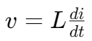
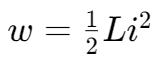
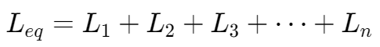
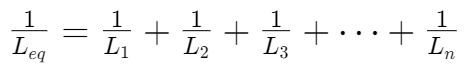

电感 | Inductor
性质
, 这里的因数 L 是电容的自感系数或者感应系数（self-inductance constant OR inductance），单位：H(Henry)。
理想电感 | The ideal inductor
在直流电路下，由于电流不变，因此电感两端的电压为零（可以看作短路）。
电感的能量计算 | The energy on a inductor

电感的串联 | Series Connections of Inductors

电感的并联 | Parallel Connection of Inductors
